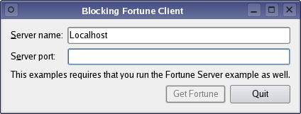

Blocking Fortune Client Example

QTcpSocket supports two general approaches to network programming:
- The asynchronous (non-blocking) approach. Operations are scheduled and performed when control returns to Qt's event loop. When the operation is finished, QTcpSocket emits a signal. For example, QTcpSocket::connectToHost() returns immediately, and when the connection has been established, QTcpSocket emits connected().
- The synchronous (blocking) approach. In non-GUI and multithreaded applications, you can call the
waitFor...()functions (e.g., QTcpSocket::waitForConnected()) to suspend the calling thread until the operation has completed, instead of connecting to signals.
The implementation is very similar to the Fortune Client example, but instead of having QTcpSocket as a member of the main class, doing asynchronous networking in the main thread, we will do all network operations in a separate thread and use QTcpSocket's blocking API.
The purpose of this example is to demonstrate a pattern that you can use to simplify your networking code, without losing responsiveness in your user interface. Use of Qt's blocking network API often leads to simpler code, but because of its blocking behavior, it should only be used in non-GUI threads to prevent the user interface from freezing. But contrary to what many think, using threads with QThread does not necessarily add unmanagable complexity to your application.
We will start with the FortuneThread class, which handles the network code.
class FortuneThread : public QThread { Q_OBJECT public: FortuneThread(QObject *parent = 0); ~FortuneThread(); void requestNewFortune(const QString &hostName, quint16 port); void run() Q_DECL_OVERRIDE; signals: void newFortune(const QString &fortune); void error(int socketError, const QString &message); private: QString hostName; quint16 port; QMutex mutex; QWaitCondition cond; bool quit; };
FortuneThread is a QThread subclass that provides an API for scheduling requests for fortunes, and it has signals for delivering fortunes and reporting errors. You can call requestNewFortune() to request a new fortune, and the result is delivered by the newFortune() signal. If any error occurs, the error() signal is emitted.
It's important to notice that requestNewFortune() is called from the main, GUI thread, but the host name and port values it stores will be accessed from FortuneThread's thread. Because we will be reading and writing FortuneThread's data members from different threads concurrently, we use QMutex to synchronize access.
void FortuneThread::requestNewFortune(const QString &hostName, quint16 port) { QMutexLocker locker(&mutex); this->hostName = hostName; this->port = port; if (!isRunning()) start(); else cond.wakeOne(); }
The requestNewFortune() function stores the host name and port of the fortune server as member data, and we lock the mutex with QMutexLocker to protect this data. We then start the thread, unless it is already running. We will come back to the QWaitCondition::wakeOne() call later.
void FortuneThread::run() { mutex.lock(); QString serverName = hostName; quint16 serverPort = port; mutex.unlock();
In the run() function, we start by acquiring the mutex lock, fetching the host name and port from the member data, and then releasing the lock again. The case that we are protecting ourselves against is that requestNewFortune() could be called at the same time as we are fetching this data. QString is reentrant but not thread-safe, and we must also avoid the unlikely risk of reading the host name from one request, and port of another. And as you might have guessed, FortuneThread can only handle one request at a time.
The run() function now enters a loop:
while (!quit) {
const int Timeout = 5 * 1000;
QTcpSocket socket;
socket.connectToHost(serverName, serverPort);
The loop will continue requesting fortunes for as long as quit is false. We start our first request by creating a QTcpSocket on the stack, and then we call connectToHost(). This starts an asynchronous operation which, after control returns to Qt's event loop, will cause QTcpSocket to emit connected() or error().
if (!socket.waitForConnected(Timeout)) {
emit error(socket.error(), socket.errorString());
return;
}
But since we are running in a non-GUI thread, we do not have to worry about blocking the user interface. So instead of entering an event loop, we simply call QTcpSocket::waitForConnected(). This function will wait, blocking the calling thread, until QTcpSocket emits connected() or an error occurs. If connected() is emitted, the function returns true; if the connection failed or timed out (which in this example happens after 5 seconds), false is returned. QTcpSocket::waitForConnected(), like the other waitFor...() functions, is part of QTcpSocket's blocking API.
After this statement, we have a connected socket to work with. Now it's time to see what the fortune server has sent us.
while (socket.bytesAvailable() < (int)sizeof(quint16)) {
if (!socket.waitForReadyRead(Timeout)) {
emit error(socket.error(), socket.errorString());
return;
}
}
This step is to read the size of the packet. Although we are only reading two bytes here, and the while loop may seem to overdo it, we present this code to demonstrate a good pattern for waiting for data using QTcpSocket::waitForReadyRead(). It goes like this: For as long as we still need more data, we call waitForReadyRead(). If it returns false, we abort the operation. After this statement, we know that we have received enough data.
quint16 blockSize;
QDataStream in(&socket);
in.setVersion(QDataStream::Qt_4_0);
in >> blockSize;
Now we can create a QDataStream object, passing the socket to QDataStream's constructor, and as in the other client examples we set the stream protocol version to QDataStream::Qt_4_0, and read the size of the packet.
while (socket.bytesAvailable() < blockSize) {
if (!socket.waitForReadyRead(Timeout)) {
emit error(socket.error(), socket.errorString());
return;
}
}
Again, we'll use a loop that waits for more data by calling QTcpSocket::waitForReadyRead(). In this loop, we're waiting until QTcpSocket::bytesAvailable() returns the full packet size.
mutex.lock();
QString fortune;
in >> fortune;
emit newFortune(fortune);
Now that we have all the data that we need, we can use QDataStream to read the fortune string from the packet. The resulting fortune is delivered by emitting newFortune().
cond.wait(&mutex);
serverName = hostName;
serverPort = port;
mutex.unlock();
}
The final part of our loop is that we acquire the mutex so that we can safely read from our member data. We then let the thread go to sleep by calling QWaitCondition::wait(). At this point, we can go back to requestNewFortune() and look closed at the call to wakeOne():
void FortuneThread::requestNewFortune(const QString &hostName, quint16 port) { ... if (!isRunning()) start(); else cond.wakeOne(); }
What happened here was that because the thread falls asleep waiting for a new request, we needed to wake it up again when a new request arrives. QWaitCondition is often used in threads to signal a wakeup call like this.
FortuneThread::~FortuneThread() { mutex.lock(); quit = true; cond.wakeOne(); mutex.unlock(); wait(); }
Finishing off the FortuneThread walkthrough, this is the destructor that sets quit to true, wakes up the thread and waits for the thread to exit before returning. This lets the while loop in run() will finish its current iteration. When run() returns, the thread will terminate and be destroyed.
Now for the BlockingClient class:
class BlockingClient : public QWidget { Q_OBJECT public: BlockingClient(QWidget *parent = 0); private slots: void requestNewFortune(); void showFortune(const QString &fortune); void displayError(int socketError, const QString &message); void enableGetFortuneButton(); private: QLabel *hostLabel; QLabel *portLabel; QLineEdit *hostLineEdit; QLineEdit *portLineEdit; QLabel *statusLabel; QPushButton *getFortuneButton; QPushButton *quitButton; QDialogButtonBox *buttonBox; FortuneThread thread; QString currentFortune; };
BlockingClient is very similar to the Client class in the Fortune Client example, but in this class we store a FortuneThread member instead of a pointer to a QTcpSocket. When the user clicks the "Get Fortune" button, the same slot is called, but its implementation is slightly different:
connect(&thread, SIGNAL(newFortune(QString)),
this, SLOT(showFortune(QString)));
connect(&thread, SIGNAL(error(int,QString)),
this, SLOT(displayError(int,QString)));
We connect our FortuneThread's two signals newFortune() and error() (which are somewhat similar to QTcpSocket::readyRead() and QTcpSocket::error() in the previous example) to requestNewFortune() and displayError().
void BlockingClient::requestNewFortune() { getFortuneButton->setEnabled(false); thread.requestNewFortune(hostLineEdit->text(), portLineEdit->text().toInt()); }
The requestNewFortune() slot calls FortuneThread::requestNewFortune(), which shedules the request. When the thread has received a new fortune and emits newFortune(), our showFortune() slot is called:
void BlockingClient::showFortune(const QString &nextFortune) { if (nextFortune == currentFortune) { requestNewFortune(); return; } currentFortune = nextFortune; statusLabel->setText(currentFortune); getFortuneButton->setEnabled(true); }
Here, we simply display the fortune we received as the argument.
Files:
See also Fortune Client Example and Fortune Server Example.